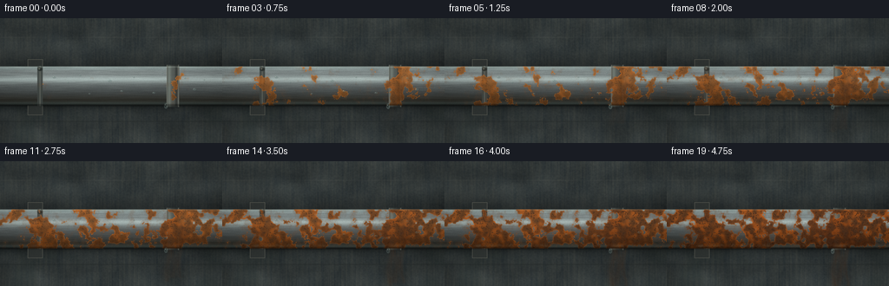
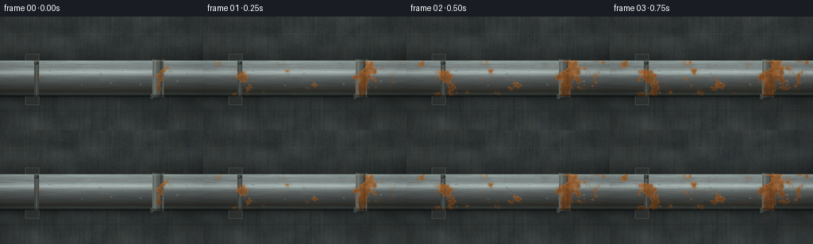

CODING AGENTS AS PIXEL WORLD MODELS
traex/DeepSeek-V4.1-Flash · material_0048
点击播放 · 原生 RGB 像素
逐轮保存的候选
回放视频、检查图与代码变化。
每份候选均可单独播放。实际图片检查记录在下方工具轨迹中。
候选 01播放与检查图
点击播放 · 原生 RGB 像素


展开代码变化
--- 上一保存版本
+++ 本次保存版本
@@ -0,0 +1,341 @@
+"""Procedural timelapse of a galvanized water pipe rusting on a damp wall."""
+
+from pathlib import Path
+
+import numpy as np
+from PIL import Image
+from scipy.ndimage import gaussian_filter
+
+from artifact_io import save
+
+
+W, H, N, FPS = 256, 144, 20, 4.0
+S = 4
+IW, IH = W * S, H * S
+CASE_DIR = Path(__file__).resolve().parent
+
+
+def smoothstep(edge0, edge1, values):
+ t = np.clip((values - edge0) / (edge1 - edge0), 0.0, 1.0)
+ return t * t * (3.0 - 2.0 * t)
+
+
+def noise(seed, sigma, shape=(IH, IW)):
+ rng = np.random.default_rng(seed)
+ field = rng.standard_normal(shape, dtype=np.float32)
+ if isinstance(sigma, tuple):
+ field = gaussian_filter(field, sigma=sigma, mode="reflect")
+ else:
+ field = gaussian_filter(field, sigma=sigma, mode="reflect")
+ lo, hi = np.percentile(field, (1.0, 99.0))
+ return np.clip((field - lo) / (hi - lo), 0.0, 1.0)
+
+
+def mix(a, b, amount):
+ amount = np.asarray(amount, dtype=np.float32)
+ if amount.ndim == 2:
+ amount = amount[..., None]
+ return a * (1.0 - amount) + b * amount
+
+
+def blend(base, color, alpha):
+ alpha = np.asarray(alpha, dtype=np.float32)
+ if alpha.ndim == 2:
+ alpha = alpha[..., None]
+ return base * (1.0 - alpha) + np.asarray(color, dtype=np.float32) * alpha
+
+
+def ellipse(cx, cy, rx, ry, softness=1.0):
+ q = ((X - cx) / rx) ** 2 + ((Y - cy) / ry) ** 2
+ return 1.0 - smoothstep(1.0 - softness, 1.0 + softness, q)
+
+
+def droplet(canvas, cx, cy, rx, ry, opacity):
+ """Paint a small transparent condensation bead."""
+ body = ellipse(cx, cy, rx, ry, 0.32)
+ shadow = ellipse(cx + rx * 0.18, cy + ry * 0.26, rx * 1.06, ry * 1.06, 0.35)
+ canvas[:] = blend(canvas, (38, 49, 49), shadow * 0.22 * opacity)
+ canvas[:] = blend(canvas, (106, 132, 128), body * 0.30 * opacity)
+ rim = np.clip(body - ellipse(cx, cy, rx * 0.70, ry * 0.70, 0.55), 0.0, 1.0)
+ canvas[:] = blend(canvas, (196, 214, 203), rim * 0.24 * opacity)
+ glint = ellipse(cx - rx * 0.30, cy - ry * 0.36, rx * 0.25, ry * 0.18, 0.75)
+ canvas[:] = blend(canvas, (238, 243, 225), glint * 0.80 * opacity)
+ lower = ellipse(cx + rx * 0.22, cy + ry * 0.33, rx * 0.20, ry * 0.12, 0.8)
+ canvas[:] = blend(canvas, (209, 222, 209), lower * 0.24 * opacity)
+
+
+# Coordinates at the render resolution. The frame is supersampled to keep the
+# pipe silhouette, bolt heads, and corrosion boundaries clean at 256x144.
+yy, xx = np.mgrid[0:IH, 0:IW].astype(np.float32)
+X = xx / S
+Y = yy / S
+
+# Slow, nearly imperceptible exposure breathing gives the time lapse life
+# without introducing camera drift.
+pipe_y = 78.0
+pipe_r = 22.5
+
+wall_large = noise(10, 38.0)
+wall_medium = noise(11, (17.0, 22.0))
+wall_fine = noise(12, 2.2)
+wall_streak = noise(13, (42.0, 2.0))
+
+wall = np.empty((IH, IW, 3), dtype=np.float32)
+wall[:] = (72, 78, 76)
+wall *= (0.84 + 0.23 * wall_large[..., None])
+wall += (wall_medium[..., None] - 0.5) * np.array([10, 9, 7], dtype=np.float32)
+wall += (wall_fine[..., None] - 0.5) * np.array([8, 8, 7], dtype=np.float32)
+wall -= wall_streak[..., None] * np.array([10, 8, 5], dtype=np.float32)
+
+# Troweled concrete bands and two shallow construction seams.
+wall *= (0.97 + 0.045 * np.cos(Y * 0.17 + wall_large * 2.0))[..., None]
+seam = np.exp(-((Y - 119.0) / 0.72) ** 2)
+wall = blend(wall, (43, 48, 47), seam * 0.36)
+seam2 = np.exp(-((Y - 22.0) / 0.55) ** 2) * (0.35 + 0.65 * smoothstep(0.2, 0.7, wall_medium))
+wall = blend(wall, (91, 94, 88), seam2 * 0.24)
+
+# Faint damp patches around the pipe and at the bottom of the wall.
+damp = noise(15, 31.0)
+damp_mask = smoothstep(0.48, 0.78, damp) * smoothstep(45.0, 108.0, Y)
+wall = blend(wall, (48, 59, 56), damp_mask * 0.22)
+
+# Contact shadow and a softer cast shadow below the pipe.
+dist_center = np.abs(Y - pipe_y)
+shadow_near = np.exp(-np.maximum(dist_center - pipe_r, 0.0) / 3.8)
+shadow_far = np.exp(-np.maximum(dist_center - pipe_r, 0.0) / 17.0)
+shadow_near *= smoothstep(-1.0, 5.0, Y - (pipe_y - pipe_r))
+wall *= (1.0 - 0.27 * shadow_far[..., None])
+wall *= (1.0 - 0.30 * shadow_near[..., None])
+wall = blend(wall, (33, 41, 40), shadow_near * 0.14)
+
+# Wall-mounted backplate and strap for the left support. They are drawn before
+# the pipe so the cylinder remains the unmistakable foreground object.
+plate = (np.abs(X - 40.5) < 9.0) & (Y > 47.0) & (Y < 112.0)
+plate_edge = plate & (
+ (np.abs(X - 31.5) < 1.0)
+ | (np.abs(X - 49.5) < 1.0)
+ | (np.abs(Y - 47.0) < 1.0)
+ | (np.abs(Y - 112.0) < 1.0)
+)
+wall = blend(wall, (55, 59, 57), plate * 0.75)
+wall = blend(wall, (104, 104, 95), plate_edge * 0.60)
+
+# The main pipe's cylindrical shading.
+yn = np.clip((Y - pipe_y) / pipe_r, -1.0, 1.0)
+nz = np.sqrt(np.maximum(1.0 - yn * yn, 0.0))
+diffuse = 0.22 + 0.78 * np.maximum(0.0, -0.68 * yn + 0.67 * nz)
+rim = np.exp(-((np.abs(yn) - 0.91) / 0.11) ** 2)
+specular = np.exp(-((yn + 0.33) / 0.18) ** 2)
+
+brushed = noise(20, (1.0, 34.0))
+brushed2 = noise(21, (0.7, 10.0))
+micro = noise(22, 0.65)
+zinc = np.empty((IH, IW, 3), dtype=np.float32)
+zinc[:] = (126, 135, 134)
+zinc += (brushed[..., None] - 0.5) * np.array([19, 20, 19], dtype=np.float32)
+zinc += (brushed2[..., None] - 0.5) * np.array([9, 10, 10], dtype=np.float32)
+zinc *= diffuse[..., None]
+zinc += specular[..., None] * np.array([48, 54, 52], dtype=np.float32)
+zinc += rim[..., None] * np.array([19, 25, 24], dtype=np.float32)
+zinc *= (0.96 + 0.08 * micro)[..., None]
+
+# Subtle reflected light on the underside of the round pipe.
+bounce = np.exp(-((yn - 0.70) / 0.24) ** 2)
+zinc += bounce[..., None] * np.array([18, 16, 12], dtype=np.float32)
+
+pipe_mask = 1.0 - smoothstep(pipe_r - 0.55, pipe_r + 0.55, dist_center)
+pipe_edge = np.exp(-((dist_center - pipe_r) / 0.85) ** 2)
+
+scene = wall.copy()
+scene = mix(scene, zinc, pipe_mask)
+
+# Darker cast-iron union at the right of frame. This gives corrosion a natural
+# origin and makes the object read immediately as plumbing hardware.
+collar = (1.0 - smoothstep(pipe_r + 0.7, pipe_r + 2.4, dist_center)) * (
+ np.abs(X - 199.0) < 7.2
+)
+collar_light = np.exp(-((X - 195.0) / 2.2) ** 2) * collar
+collar_dark = (
+ np.exp(-((X - 203.0) / 1.5) ** 2)
+ + np.exp(-((np.abs(Y - pipe_y) - (pipe_r + 1.2)) / 1.0) ** 2)
+) * collar
+scene = blend(scene, (86, 91, 87), collar * 0.93)
+scene += collar_light[..., None] * np.array([25, 28, 25], dtype=np.float32)
+scene *= (1.0 - 0.32 * np.clip(collar_dark, 0.0, 1.0))[..., None]
+
+# Two raised ridges make the union a fitting rather than a painted band.
+for ridge_x in (192.3, 205.7):
+ ridge = (np.abs(X - ridge_x) < 0.8) & (np.abs(Y - pipe_y) < pipe_r + 2.0)
+ scene = blend(scene, (149, 151, 139), ridge * 0.42)
+ scene = blend(scene, (38, 43, 41), (ridge & (X > ridge_x)) * 0.32)
+
+# Left strap and its screw housing.
+strap = (np.abs(X - 46.0) < 3.2) & (np.abs(Y - pipe_y) < pipe_r + 0.6)
+strap_edge = (np.abs(X - 46.0) < 0.55) & (np.abs(Y - pipe_y) < pipe_r + 0.6)
+scene = blend(scene, (67, 73, 70), strap * 0.88)
+scene = blend(scene, (142, 145, 132), strap_edge * 0.35)
+screw = ellipse(46.0, pipe_y - pipe_r + 3.3, 3.0, 2.2, 0.25)
+screw_hi = ellipse(45.1, pipe_y - pipe_r + 2.7, 1.2, 0.65, 0.6)
+scene = blend(scene, (52, 58, 55), screw * 0.92)
+scene = blend(scene, (157, 158, 143), screw_hi * 0.55)
+scene = blend(scene, (18, 23, 23), ellipse(46.7, pipe_y - pipe_r + 3.6, 0.65, 0.45, 0.5) * 0.72)
+
+# Corrosion field. Several weak sources are combined with a multiscale noise
+# field; lowering the threshold makes the same colonies thicken and merge.
+n_large = noise(31, 22.0)
+n_medium = noise(32, 7.5)
+n_small = noise(33, 2.0)
+n_streak = noise(34, (18.0, 2.2))
+
+sources = [
+ (199.0, 78.0, 0.72, 15.0),
+ (46.0, 79.0, 0.44, 11.0),
+ (111.0, 88.0, 0.31, 13.0),
+ (164.0, 75.0, 0.24, 15.0),
+]
+source_field = np.zeros((IH, IW), dtype=np.float32)
+for sx, sy, strength, spread in sources:
+ source_field = np.maximum(
+ source_field,
+ strength * np.exp(-((X - sx) ** 2 + (Y - sy) ** 2) / (2.0 * spread**2)),
+ )
+
+# A leak at the union runs toward the lower edge of the pipe.
+leak = np.exp(-((X - (199.0 + 1.8 * np.sin((Y - 64.0) * 0.10))) / 3.5) ** 2)
+leak *= smoothstep(72.0, 96.0, Y) * (1.0 - smoothstep(100.0, 108.0, Y))
+source_field += leak * 0.22
+
+field = (
+ 0.52 * n_large
+ + 0.27 * n_medium
+ + 0.13 * n_small
+ + 0.48 * source_field
+ + 0.10 * n_streak * smoothstep(0.35, 0.8, source_field)
+)
+field = gaussian_filter(field, sigma=0.85, mode="reflect")
+
+
+def render(frame_index):
+ p = frame_index / (N - 1)
+ # Corrosion accelerates once moisture has compromised the zinc layer.
+ growth = 0.10 * p + 0.90 * (p**0.78)
+ threshold = np.quantile(field[pipe_mask > 0.55], 0.985 - 0.725 * growth)
+
+ rust = smoothstep(threshold - 0.006, threshold + 0.032, field) * pipe_mask
+ halo = smoothstep(threshold - 0.17, threshold + 0.018, field) * pipe_mask
+ old_rust = smoothstep(threshold + 0.025, threshold + 0.22, field) * rust
+
+ out = scene.copy()
+
+ # Iron oxide bleeds into the zinc before thick scale forms.
+ out = blend(out, (112, 72, 49), halo * (0.11 + 0.18 * p))
+
+ rust_light = np.array([190, 102, 43], dtype=np.float32)
+ rust_mid = np.array([142, 67, 28], dtype=np.float32)
+ rust_dark = np.array([69, 39, 27], dtype=np.float32)
+ rust_ochre = np.array([205, 133, 58], dtype=np.float32)
+
+ color_a = mix(rust_light, rust_ochre, n_large * 0.55 + n_medium * 0.20)
+ color_b = mix(rust_mid, rust_dark, smoothstep(0.30, 0.78, n_medium + 0.24 * n_small))
+ rust_color = mix(color_a, color_b, 0.34 + 0.42 * p)
+
+ # Retain the cylindrical light direction on the oxide crust.
+ rust_shade = 0.56 + 0.57 * diffuse
+ rust_color *= rust_shade[..., None]
+
+ # Darker pitted centers and bright broken scale edges.
+ pits = smoothstep(0.58, 0.78, n_small) * smoothstep(0.18, 0.65, old_rust)
+ rust_color = blend(rust_color, (48, 31, 24), pits * (0.28 + 0.34 * p))
+ blurred = gaussian_filter(rust, sigma=1.35)
+ flake_edge = np.clip((rust - blurred) * 3.8, 0.0, 1.0)
+ rust_color += flake_edge[..., None] * np.array([40, 26, 16], dtype=np.float32)
+ fine_scab = (n_small[..., None] - 0.5) * np.array([31, 19, 10], dtype=np.float32)
+ rust_color += fine_scab
+
+ out = mix(out, rust_color, rust * (0.78 + 0.18 * p))
+
+ # Exposed dark iron at the oldest, deepest corrosion.
+ exposed = old_rust * smoothstep(0.66, 0.84, n_medium) * (0.30 + 0.50 * p)
+ out = blend(out, (56, 49, 42), exposed * 0.32)
+
+ # Wet rust is slightly darker and more saturated near the union.
+ wet = np.exp(-((X - 199.0) / 25.0) ** 2) * (0.35 + 0.65 * p)
+ wet *= smoothstep(threshold - 0.02, threshold + 0.12, field) * pipe_mask
+ out = blend(out, (75, 39, 25), wet * 0.14)
+
+ # Rusty seepage runs from the fitting onto the concrete. The stains remain
+ # behind the pipe and expand downward as the years pass.
+ streak_noise = noise(44, (14.0, 1.1))
+ for sx, width, phase in ((198.5, 5.0, 0.0), (193.0, 3.4, 1.7), (207.0, 2.5, 3.1)):
+ path = sx + 2.2 * np.sin(Y * 0.12 + phase) + (streak_noise - 0.5) * 3.0
+ band = np.exp(-((X - path) / width) ** 2)
+ length = 8.0 + (p**0.82) * (43.0 + 7.0 * np.sin(phase))
+ run = smoothstep(pipe_y + pipe_r - 1.0, pipe_y + pipe_r + 3.0, Y)
+ run *= 1.0 - smoothstep(pipe_y + pipe_r + length - 3.0, pipe_y + pipe_r + length, Y)
+ run *= (0.42 + 0.58 * streak_noise) * (0.05 + 0.56 * p)
+ out = blend(out, (87, 55, 36), band * run * 0.42)
+ core = np.exp(-((X - path) / (width * 0.30)) ** 2) * run * 0.16 * p
+ out = blend(out, (57, 38, 28), core)
+
+ # A pale mineral crust appears along the lowest edge of heavily rusted pipe.
+ lower_edge = np.exp(-((Y - (pipe_y + pipe_r - 3.0)) / 2.0) ** 2)
+ crust = lower_edge * smoothstep(0.50, 0.85, field) * smoothstep(0.35, 0.95, p)
+ out = blend(out, (191, 162, 118), crust * 0.18)
+
+ # Condensation beads sit on the pipe surface; they fade as the scale roughens.
+ beads = [
+ (62, 68, 1.9, 1.2), (78, 74, 1.2, 0.8), (92, 66, 1.4, 0.9),
+ (126, 72, 2.3, 1.4), (140, 84, 1.5, 1.0), (154, 68, 1.1, 0.7),
+ (177, 86, 1.7, 1.0), (213, 69, 1.4, 0.9), (224, 82, 2.0, 1.2),
+ (235, 71, 1.0, 0.7), (103, 87, 1.2, 0.8), (187, 63, 1.1, 0.7),
+ ]
+ for i, (bx, by, brx, bry) in enumerate(beads):
+ local_rust = np.clip(float(field[int(by * S), int(bx * S)] - threshold) * 3.0, 0.0, 1.0)
+ opacity = (0.80 - 0.30 * p) * (1.0 - 0.55 * local_rust)
+ opacity *= 0.93 + 0.07 * np.sin(i * 1.73 + p * 7.0)
+ droplet(out, bx, by, brx, bry, max(opacity, 0.0))
+
+ # A larger pendant drop slowly swells beneath the fitting.
+ drop_y = 101.0 + 2.6 * p
+ drop_opacity = 0.68 + 0.16 * np.sin(p * np.pi * 2.0)
+ droplet(out, 191.0, drop_y, 2.1, 3.2, drop_opacity)
+ tail = np.exp(-((X - 191.0) / 0.65) ** 2) * (
+ smoothstep(99.0, 101.0, Y) * (1.0 - smoothstep(drop_y - 1.0, drop_y + 1.0, Y))
+ )
+ out = blend(out, (119, 139, 132), tail * 0.22)
+
+ # Metal rim light separates the round silhouette from the wall.
+ top_rim = np.exp(-((Y - (pipe_y - pipe_r + 0.65)) / 0.72) ** 2)
+ top_rim *= 0.58 + 0.42 * n_large
+ out += (
+ top_rim[..., None]
+ * np.array([34, 38, 34], dtype=np.float32)
+ * (1.0 - rust * 0.55)[..., None]
+ )
+ bottom_shadow = np.exp(-((Y - (pipe_y + pipe_r - 0.45)) / 1.25) ** 2)
+ out *= (1.0 - 0.35 * bottom_shadow[..., None])
+
+ # Gentle grade: cool the shadows, warm the metal, then add fine film grain.
+ lum = out.mean(axis=2, keepdims=True)
+ out = out + (lum - out) * np.array([0.08, 0.01, -0.03], dtype=np.float32)
+ out = (out - 128.0) * 1.055 + 128.0
+ vignette = 1.0 - 0.12 * (((X - W / 2) / (W / 2)) ** 2 + ((Y - H / 2) / (H / 2)) ** 2)
+ out *= vignette[..., None]
+ grain = noise(100 + frame_index, 0.55) - 0.5
+ out += grain[..., None] * 3.2
+
+ return np.clip(out, 0, 255).astype(np.uint8)
+
+
+def main():
+ frames = []
+ for i in range(N):
+ hi = render(i)
+ frame = Image.fromarray(hi).resize((W, H), Image.Resampling.LANCZOS)
+ frames.append(np.asarray(frame, dtype=np.uint8))
+ save(np.asarray(frames), CASE_DIR)
+ print(f"Wrote {N} frames at {W}x{H} to {CASE_DIR}")
+
+
+if __name__ == "__main__":
+ main()
可观测工具轨迹
实际执行的命令与返回图片。
命令 1exit 0
/bin/bash -c "pwd && rg --files -g 'prompt.txt' -g 'GENERATION_RULES.md' -g 'task_spec.json' -g '"'!node_modules'"' -g '"'!vendor'"'"
命令 2exit 0
/bin/bash -c "find . -maxdepth 2 -type f -printf '%p\\n' | sort | head -200"
命令 3exit 0
/bin/bash -c 'git status --short --branch'
命令 4exit 0
/bin/bash -c 'cat prompt.txt'
命令 5exit 0
/bin/bash -c 'cat GENERATION_RULES.md'
命令 6exit 0
/bin/bash -c 'cat task_spec.json'
命令 7exit 0
/bin/bash -c "sed -n '1,240p' artifact_io.py && printf '\\n--- player ---\\n' && sed -n '1,240p' player_template.html"
命令 8exit 0
/bin/bash -c "python - <<'PY' import importlib.util for name in ['numpy','PIL','scipy','cv2','imageio','matplotlib']: print(name, bool(importlib.util.find_spec(name))) PY"
命令 9exit 0
/bin/bash -c "python - <<'PY'
import PIL, numpy
print('PIL',PIL.__version__,'numpy',numpy.__version__)
PY"命令 10exit 0
/bin/bash -c 'which ffmpeg || true; which convert || true; which magick || true'
命令 11exit 0
/bin/bash -c 'which chafa || true; which viu || true; which jp2 || true; which img2txt || true'
命令 12exit 1
/bin/bash -c 'python generate.py'
命令 13exit 1
/bin/bash -c 'python generate.py'
命令 14exit 0
/bin/bash -c 'python generate.py'
命令 15exit 0
/bin/bash -c "python - <<'PY'
from PIL import Image
import numpy as np
for i in [0,4,9,14,19]:
a=np.asarray(Image.open(f'frames/{i:02d}.png')).astype(float)
print(i, 'mean',a.mean((0,1)).round(1),'std',a.std((0,1)).round(1),'minmax',a.min(),a.max())
print('inspection', Image.open('inspection.png').size)
print('pixels', np.load('pixels.npz')['pixels'].shape, np.load('pixels.npz')['pixels'].dtype)
PY"命令 16exit 0
/bin/bash -c "python - <<'PY'
from PIL import Image
import numpy as np
chars=' .:-=+*#%@'
for fi in [0,9,19]:
im=Image.open(f'frames/{fi:02d}.png').convert('RGB')
# crop pipe band 48:108, then 64x30 ascii luminance
im=im.crop((0,42,256,112)).resize((72,28))
a=np.asarray(im).astype(float)
l=a.mean(2)
print('\\nFRAME',fi)
for row in l:
print(''.join(chars[min(9,int(v/25.6))] for v in row))
PY"命令 17exit 0
/bin/bash -c "python - <<'PY'
from PIL import Image
import numpy as np
prev=None
for i in range(20):
a=np.asarray(Image.open(f'frames/{i:02d}.png')).astype(np.int16)
if prev is not None:
d=np.abs(a-prev)
print(f'{i:02d}: mad={d.mean():.2f} changed={(d.max(2)>8).mean():.3f}')
prev=a
PY"命令 18exit 0
/bin/bash -c "python - <<'PY'
from PIL import Image
import numpy as np
for i in [0,5,10,15,19]:
a=np.asarray(Image.open(f'frames/{i:02d}.png')).astype(float)
yy,xx=np.mgrid[:144,:256]
pipe=(abs(yy-78)<21)
wall=(abs(yy-78)>29)
print(i,'pipe',a[pipe].mean(0).round(1),'wall',a[wall].mean(0).round(1),'pipe R-B', (a[pipe][:,0]-a[pipe][:,2]).mean().round(1))
PY"命令 19exit 0
/bin/bash -c 'ls -lh'
命令 20exit 0
/bin/bash -c "python - <<'PY'
from PIL import Image
import numpy as np
for i in [0,5,10,15,19]:
a=np.asarray(Image.open(f'frames/{i:02d}.png')).astype(float)
yy,xx=np.mgrid[:144,:256]
pipe=(abs(yy-78)<=21)
# rust pixels heuristic: red > green*1.18 and red > blue*1.5 and inside pipe
r=(a[...,0]>a[...,1]*1.18)&(a[...,0]>a[...,2]*1.45)&pipe
print(i, 'rust area', round(r.sum()/pipe.sum(),3), 'pipe bbox mean', a[50:106,0:256].mean(0).round(1))
PY"命令 21exit 0
/bin/bash -c "python - <<'PY'
from pathlib import Path
from PIL import Image
import json, re, base64, numpy as np
frames=sorted(Path('frames').glob('*.png'))
assert len(frames)==20
arr=[]
for i,p in enumerate(frames):
im=Image.open(p)
assert im.size==(256,144) and im.mode=='RGB', (p,im.size,im.mode)
arr.append(np.asarray(im))
arr=np.asarray(arr)
packed=np.load('pixels.npz')['pixels']
assert packed.shape==(144,256,20)
recon=(arr[:,:,:,0].astype(np.uint32)<<16)|(arr[:,:,:,1].astype(np.uint32)<<8)|arr[:,:,:,2].astype(np.uint32)
assert np.array_equal(packed,recon.transpose(1,2,0))
html=Path('index.html').read_text()
m=re.search(r'const DATA=(\\{.*?\\}),W=DATA',html)
assert m
data=json.loads(m.group(1))
assert (data['width'],data['height'],data['frames'],data['fps'])==(256,144,20,4.0)
assert len(data['deltas'])==19 and data['audio'] is None
print('validated:',len(frames),'RGB frames, pixel tensor, and player payload')
print('index.html bytes:',Path('index.html').stat().st_size)
PY"命令 22exit 0
/bin/bash -c 'python -m py_compile generate.py && git status --short -- .'
命令 23exit 0
/bin/bash -c "ls -l frames | head; test -s index.html && test -s pixels.npz && test -s inspection.png && echo 'required artifacts present'"
保存候选 1 份；完成命令 23 次；可验证图片返回 0 张。原始 API 响应与完整日志保留在本地。